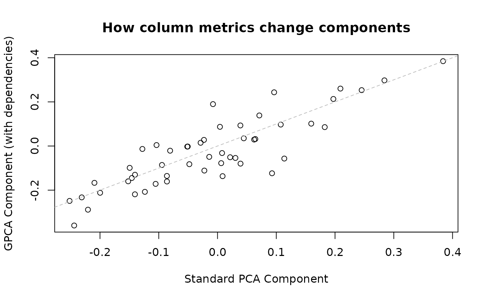

genpca: Generalized PCA and Related Decompositions
genpca-overview.RmdIntroduction
Principal Component Analysis (PCA) is one of the most widely used techniques in data analysis, providing a foundation for dimensionality reduction, data visualization, and feature extraction. This vignette introduces Generalized PCA (GPCA), a powerful extension that adapts PCA to the natural geometry of your data. Through practical examples and clear explanations, you’ll learn when and how to move beyond standard PCA to unlock deeper insights from complex datasets.
Why Generalized PCA?
Standard Principal Component Analysis (PCA) assumes that all variables and observations are equally important and that Euclidean distance captures the relevant notion of similarity. However, many real-world applications violate these assumptions.
Consider survey data where each observation represents responses from populations of vastly different sizes. Standard PCA would treat a response representing 10,000 people identically to one representing 100 people, potentially distorting the true population-level patterns. Similarly, when variables are measured with different precisions—perhaps some through expensive high-accuracy instruments and others through approximate methods—we need a framework that can incorporate these measurement characteristics directly into the analysis.
The challenge extends beyond simple weighting. In spatial and temporal data, variables often exhibit known correlation structures that should inform the dimensionality reduction. A temperature measurement at one location is naturally correlated with nearby locations, and ignoring this structure can lead to misleading components. Furthermore, many specialized domains such as functional data analysis and shape analysis operate in inherently non-Euclidean spaces where standard PCA’s assumptions break down entirely.
Generalized PCA (GPCA) addresses these limitations by extending the PCA framework to incorporate row and column metric constraints that encode prior knowledge about the data structure. This principled approach allows us to perform dimensionality reduction that respects the natural geometry of our problem domain.
What is Generalized PCA?
The genpca package implements Generalized PCA and
related matrix decompositions for data observed in non‑Euclidean
inner‑product spaces. At its core, GPCA transforms the standard PCA
problem by introducing two symmetric positive semi‑definite (PSD)
matrices that fundamentally alter how we measure distances and angles in
our data space.
Given an n × p data matrix X, the row
metric M (an n × n matrix) defines the inner
product on the observation space. This metric induces the M‑norm
||x||_M^2 = x^T M x and determines how we measure distances
between observations through
d_M(x, y)^2 = (x − y)^T M (x − y). When working with
weighted sampling, we might choose M to be a diagonal
matrix of observation weights. For data with known correlation structure
among observations, M might encode precision (inverse
covariance) relationships. In applications involving temporal or spatial
data, M could be a kernel matrix capturing smoothness
assumptions.
Analogously, the column metric A (a p × p
matrix) defines the inner product on the variable space, inducing
||v||_A^2 = v^T A v and the distance
d_A(v, w)^2 = (v − w)^T A (v − w). This metric might encode
feature importance through diagonal weights, capture known relationships
between variables through covariance or precision matrices, or represent
graph‑based connectivity in network data. The key insight is that
correlations and similarities are encoded through these metrics as inner
products, while dissimilarities emerge naturally as the induced
distances.
When both M = I_n and A = I_p (identity
matrices), we recover standard PCA as a special case, confirming that
GPCA is a true generalization that encompasses the familiar while
enabling much more.
Package Capabilities
The genpca package provides a comprehensive toolkit for
generalized matrix decompositions. At its heart is the
genpca() function, which implements GPCA through multiple
computational backends tailored to different problem scales and
structures. For small-to-medium datasets where forming full matrices is
feasible, the method = "eigen" option provides direct
eigendecomposition with excellent numerical stability. When dealing with
large-scale or sparse data, the method = "spectra" backend
leverages matrix-free iterative solvers implemented in C++ for
exceptional scalability. For situations where only a few components are
needed from massive datasets, method = "deflation" extracts
components sequentially, minimizing memory footprint.
Beyond the core decomposition, the package handles the practical challenges of working with metric constraints. It automatically validates and, when necessary, repairs metric matrices to ensure positive semi-definiteness, using sophisticated remediation strategies that preserve as much of the original structure as possible. This robustness means you can focus on the statistical modeling rather than numerical details.
The package integrates seamlessly with the multivarious
ecosystem, providing a unified workflow for preprocessing, projection,
reconstruction, and transfer learning across different dimensionality
reduction methods. This integration extends to Generalized Partial Least
Squares through the genpls() function, enabling canonical
correlation analysis and related two-block methods with full metric
support.
This vignette introduces GPCA concepts through practical examples and demonstrates core usage patterns. For those interested in the mathematical foundations, particularly the connections to PLS-SVD and whitening transformations, the companion vignette “Generalized PLS-SVD: Explicit Whitening Reference” provides detailed theoretical derivations.
Mathematical Formulation
With this conceptual foundation in place, let’s examine the mathematical formulation that makes GPCA both theoretically sound and computationally tractable.
The Generalized PCA Problem
GPCA seeks a low‑rank approximation of that minimizes reconstruction error in a metric‑weighted sense. Given row metric and column metric , we find rank‑ factors by minimizing:
This weighted Frobenius norm incorporates the metrics into the distance calculation. The solution satisfies orthonormality constraints in the respective metrics:
- (M‑orthonormal scores)
- (A‑orthonormal loadings)
Geometric Interpretation
The metrics M and A define the inner
products—and thus norms and distances—in the observation and variable
spaces. This is how weighting, correlation structure, and smoothness are
incorporated in a principled way. For example, choosing M
proportional to a precision (inverse covariance) emphasizes directions
with higher effective information, while a diagonal M
implements row weighting. When M = I and
A = I, we recover ordinary Euclidean geometry and standard
PCA.
Getting Started: Standard PCA as GPCA
Now that we understand the mathematical framework, let’s see GPCA in action. We’ll begin with standard PCA to establish a baseline, then progressively introduce metrics to demonstrate how they modify the decomposition and provide deeper insights into the data structure.
set.seed(1)
# Simulated data: 200 observations, 50 variables
X <- matrix(rnorm(200 * 50), 200, 50)
library(genpca)
#> Registered S3 method overwritten by 'genpca':
#> method from
#> transfer.cross_projector multivarious
#>
#> Attaching package: 'genpca'
#> The following object is masked from 'package:base':
#>
#> truncate
# Standard PCA via GPCA (identity metrics by default)
fit <- genpca(X, ncomp = 5, preproc = multivarious::center())
# Extract key components
cat("Top 5 singular values:\n")
#> Top 5 singular values:
print(fit$sdev)
#> [1] 21.28910 20.34509 20.05655 19.84090 19.39831
cat("\nExplained variance (first 5 components):\n")
#>
#> Explained variance (first 5 components):
var_explained <- fit$sdev^2 / sum(fit$sdev^2)
print(round(var_explained[1:5] * 100, 2))
#> [1] 22.22 20.30 19.72 19.30 18.45
# Scores and components follow multivarious conventions
dim(multivarious::scores(fit)) # n × k matrix
#> [1] 200 5
dim(multivarious::components(fit)) # p × k matrix
#> [1] 50 5This recovers standard PCA since we used identity metrics
(M = I, A = I).
Weighted Observations: Row Metrics
Having established the baseline with standard PCA, we can now explore how row metrics fundamentally change the analysis. Consider a scenario where observations have different importance—a common situation in survey data where each row might represent responses from vastly different population sizes.
library(Matrix)
# Simulate observation weights (e.g., population sizes)
n <- nrow(X)
obs_weights <- rgamma(n, shape = 2, scale = 0.5)
obs_weights <- obs_weights / mean(obs_weights) # normalize
# Create diagonal row metric
M <- Diagonal(n, x = obs_weights)
# GPCA with row weighting
fit_weighted <- genpca(X, M = M, ncomp = 5, preproc = multivarious::center())
# Compare with unweighted
cat("Singular values (unweighted vs weighted):\n")
#> Singular values (unweighted vs weighted):
cbind(Standard = fit$sdev[1:5], Weighted = fit_weighted$sdev[1:5])
#> Standard Weighted
#> [1,] 21.28910 22.88953
#> [2,] 20.34509 21.80008
#> [3,] 20.05655 21.36878
#> [4,] 19.84090 20.82550
#> [5,] 19.39831 19.85992
# The weighted decomposition emphasizes high-weight observationsVariable Dependencies: Column Metrics
While row metrics weight observations, column metrics encode relationships between variables. This capability becomes crucial when dealing with variables that have known correlation structures, such as measurements taken at different spatial locations or time points where proximity implies similarity.
p <- ncol(X)
# Example: Variables with local correlation structure
# Create a tridiagonal matrix that is guaranteed to be PSD
# This represents local smoothness constraints
library(Matrix)
# Method 1: Simple diagonal weights with small correlations
# Create a correlation-like structure that's guaranteed PSD
A <- Diagonal(p) # Start with identity
# Add small positive correlations between adjacent variables
for (i in 1:(p-1)) {
A[i, i+1] <- 0.2
A[i+1, i] <- 0.2
}
# Ensure it's positive definite by adding a small ridge
A <- A + 0.1 * Diagonal(p)
# GPCA with column metric
fit_corr <- genpca(X, A = A, ncomp = 5, preproc = multivarious::center())
# The decomposition now accounts for variable dependencies
cat("Effect of column metric on first component:\n")
#> Effect of column metric on first component:
plot(multivarious::components(fit)[,1],
multivarious::components(fit_corr)[,1],
xlab = "Standard PCA Component",
ylab = "GPCA Component (with dependencies)",
main = "How column metrics change components")
abline(0, 1, lty = 2, col = "gray")
Computational Methods
Understanding how metrics affect the decomposition is one aspect of
GPCA; implementing it efficiently at scale is another. The package
provides multiple computational backends, each optimized for different
scenarios. The method parameter lets you select the most
appropriate approach for your data size and computational
constraints:
Method Selection Guide
| Method | Best For | Memory Usage | Speed | Notes |
|---|---|---|---|---|
eigen |
Small-medium data (n,p < 1000) | High | Fast for small data | Forms full matrices |
spectra |
Large sparse data | Low | Fast iterations | Matrix-free, requires C++ |
deflation |
Few components needed | Minimal | Moderate | Sequential extraction |
# Compare methods on same data
library(microbenchmark)
# Small dataset for quick comparison
X_small <- matrix(rnorm(100 * 30), 100, 30)
# Time different methods (eval=FALSE for vignette, but instructive)
if (FALSE) {
microbenchmark(
eigen = genpca(X_small, ncomp = 5, method = "eigen"),
spectra = genpca(X_small, ncomp = 5, method = "spectra"),
deflation = genpca(X_small, ncomp = 5, method = "deflation"),
times = 10
)
}
# For large sparse problems, spectra is preferred
# Note: When using sparse matrices, skip preprocessing or convert to dense
n_large <- 500 # Smaller for vignette compilation
p_large <- 200
X_sparse <- Matrix::rsparsematrix(n_large, p_large, density = 0.01)
# Convert to regular matrix for preprocessing compatibility
# In practice, you might use preproc = multivarious::pass() with sparse matrices
X_dense <- as.matrix(X_sparse)
fit_large <- genpca(X_dense, ncomp = 10, method = "spectra",
preproc = multivarious::center())
#> 'as(<ddiMatrix>, "dgCMatrix")' is deprecated.
#> Use 'as(as(., "generalMatrix"), "CsparseMatrix")' instead.
#> See help("Deprecated") and help("Matrix-deprecated").Preprocessing and Reconstruction
With the computational machinery in place, we turn to a critical
aspect of any PCA analysis: preprocessing and the ability to reconstruct
data from the learned components. The package’s integration with
multivarious provides a sophisticated preprocessing
pipeline that ensures numerical stability and statistical validity.
Centering, in particular, is typically essential for meaningful PCA as
it ensures components capture variance rather than being dominated by
the mean structure.
# Center columns (variables) before decomposition
fit_c <- genpca(X, ncomp = 10, preproc = multivarious::center())
# Examine reconstruction error vs number of components
recon_errors <- sapply(1:10, function(k) {
Xhat <- reconstruct(fit_c, comp = 1:k)
mean((X - Xhat)^2)
})
plot(1:10, recon_errors, type = "b",
xlab = "Number of Components",
ylab = "Mean Squared Reconstruction Error",
main = "Reconstruction Quality")
# Typical elbow at 3-4 components for random data
cat("Reconstruction error with 3 components:", recon_errors[3], "\n")
#> Reconstruction error with 3 components: 0.8937022
cat("Percent variance retained:",
100 * (1 - recon_errors[3]/var(as.vector(X))), "%\n")
#> Percent variance retained: 12.79811 %Out-of-Sample Projection
A key strength of GPCA lies in its ability to generalize beyond the training data. The learned decomposition defines a projection operator that can map new observations into the component space, making GPCA suitable for prediction, validation, and transfer learning applications.
# Split data for demonstration
n_train <- 150
X_train <- X[1:n_train, ]
X_test <- X[(n_train+1):nrow(X), ]
# Fit on training data
fit_train <- genpca(X_train, ncomp = 5, preproc = multivarious::center())
# Project test data into learned space
scores_test <- multivarious::project(fit_train, X_test)
# Verify dimensions of projected scores
cat("Test scores dimensions:", dim(scores_test), "\n")
#> Test scores dimensions: 50 5
# For reconstruction error, evaluate on the training split
X_train_recon <- multivarious::reconstruct(fit_train, comp = 1:5)
train_error <- mean((X_train - X_train_recon)^2)
cat("Train reconstruction error (5 comps):", train_error, "\n")
#> Train reconstruction error (5 comps): 0.8184143Working with Covariance Matrices
In many practical scenarios, you may encounter situations where the
raw data matrix is unavailable or too large to handle directly, but you
have access to a pre-computed covariance matrix C = X’MX. This arises
naturally when working with privacy-protected data, distributed
computing systems, or when the covariance has been computed
incrementally from streaming data. The genpca_cov()
function elegantly handles these cases by performing GPCA directly on
the covariance matrix:
# Example: Large dataset where we only store the covariance
set.seed(789)
n <- 1000 # Many observations
p <- 50 # Moderate number of variables
X_large <- matrix(rnorm(n * p), n, p)
# Row weights (e.g., sample importance)
M <- diag(runif(n, 0.5, 1.5))
# Compute and store only the covariance
C <- t(X_large) %*% M %*% X_large # C = X'MX
# Column constraint
A <- diag(runif(p, 0.8, 1.2))
# GPCA on covariance (memory-efficient for large n)
fit_cov <- genpca_cov(C, R = A, ncomp = 10, method = "gmd")
# This is mathematically equivalent to:
# genpca(X_large, M = M, A = A, ncomp = 10)
# but doesn't require storing the large X matrix
cat("Singular values from covariance GPCA:\n")
#> Singular values from covariance GPCA:
print(fit_cov$d[1:5])
#> [1] 38.69639 38.17478 37.65776 37.33684 37.22870The genpca_cov() function becomes particularly valuable
in several scenarios. When the data matrix X is too large to store in
memory—perhaps containing millions of observations—storing only the p ×
p covariance matrix provides enormous memory savings. This approach also
shines when you receive pre-computed covariance matrices from external
sources where the raw data cannot be shared due to privacy constraints.
Additionally, when you need to explore multiple analyses with different
column constraints on the same dataset, working with the covariance
matrix allows you to avoid repeatedly processing the raw data.
Generalized Partial Least Squares
The principles of GPCA extend naturally to two-block methods, where we seek to understand relationships between two sets of variables. The package implements generalized versions of Partial Least Squares that respect the metric structure of both data blocks, opening up powerful possibilities for canonical correlation analysis and related techniques.
Canonical Correlation with Metrics
The package provides generalized PLS-SVD (canonical PLS) for finding relationships between two data matrices while respecting their metric structures:
set.seed(2)
# Create correlated data blocks
n <- 200
# X block: genomic measurements
X_pls <- matrix(rnorm(n * 50), n, 50)
# Y block: phenotypic outcomes with some correlation to X
shared_signal <- matrix(rnorm(n * 3), n, 3)
Y_pls <- shared_signal %*% matrix(rnorm(3 * 20), 3, 20) +
0.5 * matrix(rnorm(n * 20), n, 20)
# Canonical PLS to find shared patterns
fit_pls <- genpls(X_pls, Y_pls, ncomp = 3,
preproc_x = multivarious::center(),
preproc_y = multivarious::center())
# Examine PLS-SVD singular values and latent correlations
cat("PLS-SVD singular values (operator):\n")
#> PLS-SVD singular values (operator):
print(round(fit_pls$d, 3))
#> [1] 527.977 397.665 327.720
# If X and Y are standardized, singular values scale with (n-1).
# Divide by (n-1) to obtain singular values of the cross-correlation operator.
cat("\nSingular values of cross-correlation (d / (n-1)):\n")
#>
#> Singular values of cross-correlation (d / (n-1)):
print(round(fit_pls$d / (n - 1), 3))
#> [1] 2.653 1.998 1.647
# Correlations between paired latent variables (always in [0, 1])
cc <- sapply(seq_len(3), function(j) cor(fit_pls$lx[, j], fit_pls$ly[, j]))
cat("\nLatent variable correlations (approx. 'canonical-like'):\n")
#>
#> Latent variable correlations (approx. 'canonical-like'):
print(round(cc, 3))
#> [1] 0.461 0.403 0.453
# The weights show which variables contribute to each canonical variate
cat("\nDimensions of weight matrices:\n")
#>
#> Dimensions of weight matrices:
cat("X weights:", dim(fit_pls$vx), "\n")
#> X weights: 50 3
cat("Y weights:", dim(fit_pls$vy), "\n")
#> Y weights: 20 3Low-Level Operator Interface
For advanced users, gplssvd_op() provides direct access
to the operator-level computations without materializing large
intermediate matrices:
# Direct operator SVD (useful for very large problems)
op_result <- gplssvd_op(X_pls, Y_pls, k = 3,
center = TRUE, scale = FALSE)
# Same singular values as high-level interface
all.equal(op_result$d, fit_pls$d)
#> [1] TRUEPractical Example: Weighted Survey Data
To illustrate the practical impact of generalized metrics, let’s work through a realistic example from survey research. This scenario demonstrates not just how to use GPCA, but why the generalized framework provides insights that standard PCA would miss.
# Simulate survey data where observations represent different population sizes
set.seed(123)
n_respondents <- 300
n_questions <- 20
# Survey responses (Likert scale 1-5)
survey_data <- matrix(sample(1:5, n_respondents * n_questions, replace = TRUE),
n_respondents, n_questions)
# Population weights (some respondents represent more people)
# E.g., stratified sampling with different sampling rates
pop_weights <- c(
rep(10, 50), # Urban areas (undersampled)
rep(2, 100), # Suburban (representative)
rep(5, 150) # Rural (slightly undersampled)
)
# Standard PCA (treats all respondents equally)
pca_unweighted <- genpca(survey_data, ncomp = 5,
preproc = multivarious::center())
# Weighted GPCA (accounts for population representation)
M_survey <- Diagonal(n_respondents, x = pop_weights / mean(pop_weights))
pca_weighted <- genpca(survey_data, M = M_survey, ncomp = 5,
preproc = multivarious::center())
# Compare first principal component patterns
pc1_unweighted <- multivarious::components(pca_unweighted)[,1]
pc1_weighted <- multivarious::components(pca_weighted)[,1]
# The weighted analysis gives different importance to questions
plot(pc1_unweighted, pc1_weighted,
xlab = "Unweighted PC1 Components",
ylab = "Population-Weighted PC1 Components",
main = "Effect of Population Weighting on Principal Components")
abline(0, 1, lty = 2, col = "red")
text(pc1_unweighted[1:5], pc1_weighted[1:5],
labels = paste0("Q", 1:5), pos = 4, cex = 0.8)
cat("\nCorrelation between weighted and unweighted PC1 loadings:",
cor(pc1_unweighted, pc1_weighted), "\n")
#>
#> Correlation between weighted and unweighted PC1 loadings: 0.8749888
cat("This shows that population weighting can substantially change the analysis.\n")
#> This shows that population weighting can substantially change the analysis.Best Practices and Performance Tips
When working with the genpca package, several practices
can dramatically improve both performance and numerical stability.
Matrix sparsity should be leveraged whenever possible—the package is
designed to work efficiently with sparse Matrix objects,
which can reduce memory usage by orders of magnitude for data with many
zero entries.
Choosing the right computational method is crucial for performance.
For small dense problems with fewer than 1000 dimensions in either
direction, the eigen method provides the most
straightforward and numerically stable approach. As your data scales up
or becomes sparse, switching to the spectra method unlocks
matrix-free computations that can handle datasets too large to fit in
memory. When you need only a handful of components from a massive
dataset, the deflation method extracts them sequentially,
trading some computational efficiency for minimal memory usage.
The package’s automatic constraint validation saves you from numerical pitfalls. When you provide metric matrices that are nearly but not quite positive semi-definite—a common occurrence with empirical covariance matrices—the package automatically detects and repairs them using principled methods that preserve as much structure as possible.
Preprocessing deserves special attention. Unless you have a specific
statistical reason to avoid it, always center your data before applying
GPCA. Centering ensures that the principal components capture variance
rather than being dominated by the mean structure. The integration with
multivarious makes this straightforward through the
preproc parameter.
For very large datasets that exceed available memory, the matrix-free
spectra method becomes essential. This approach never forms
the full transformed matrices, instead computing matrix-vector products
on demand. Combined with sparse matrix representations, this enables
GPCA on datasets that would be impossible to analyze with traditional
methods.
References
Allen, G. I., Grosenick, L., & Taylor, J. (2014). A generalized least-square matrix decomposition. Journal of the American Statistical Association, 109(505), 145-159.
Beaton, D., ADNI, et al. (2016). Generalized partial least squares: A framework for simultaneously capturing common and individual variation. NeuroImage, 141, 346-363.
De Leeuw, J. (2007). Derivatives of generalized eigen systems with applications. UCLA Department of Statistics Papers.
Further Resources
This vignette has introduced the core concepts and practical usage of
Generalized PCA. For those ready to dive deeper, several resources are
available. The companion vignette “Generalized PLS-SVD: Explicit
Whitening Reference” provides detailed mathematical derivations and
connections to the broader literature on matrix decompositions. The
package documentation (?genpca) offers complete function
references with additional examples. For questions, bug reports, or
contributions, visit the GitHub repository at https://github.com/bbuchsbaum/genpca.
The generalized framework opens up a rich space of possibilities for data analysis. By encoding prior knowledge through metrics, GPCA transforms dimensionality reduction from a purely data-driven exercise into a principled integration of domain expertise with statistical learning.
#> R version 4.5.1 (2025-06-13)
#> Platform: x86_64-pc-linux-gnu
#> Running under: Ubuntu 24.04.3 LTS
#>
#> Matrix products: default
#> BLAS: /usr/lib/x86_64-linux-gnu/openblas-pthread/libblas.so.3
#> LAPACK: /usr/lib/x86_64-linux-gnu/openblas-pthread/libopenblasp-r0.3.26.so; LAPACK version 3.12.0
#>
#> locale:
#> [1] LC_CTYPE=C.UTF-8 LC_NUMERIC=C LC_TIME=C.UTF-8
#> [4] LC_COLLATE=C.UTF-8 LC_MONETARY=C.UTF-8 LC_MESSAGES=C.UTF-8
#> [7] LC_PAPER=C.UTF-8 LC_NAME=C LC_ADDRESS=C
#> [10] LC_TELEPHONE=C LC_MEASUREMENT=C.UTF-8 LC_IDENTIFICATION=C
#>
#> time zone: UTC
#> tzcode source: system (glibc)
#>
#> attached base packages:
#> [1] stats graphics grDevices utils datasets methods base
#>
#> other attached packages:
#> [1] microbenchmark_1.5.0 Matrix_1.7-3 genpca_0.1.0
#>
#> loaded via a namespace (and not attached):
#> [1] GPArotation_2025.3-1 sass_0.4.10 future_1.67.0
#> [4] generics_0.1.4 shape_1.4.6.1 multivarious_0.2.0
#> [7] lattice_0.22-7 listenv_0.9.1 digest_0.6.37
#> [10] magrittr_2.0.4 evaluate_1.0.5 grid_4.5.1
#> [13] RColorBrewer_1.1-3 iterators_1.0.14 fastmap_1.2.0
#> [16] foreach_1.5.2 glmnet_4.1-10 jsonlite_2.0.0
#> [19] ggrepel_0.9.6 RSpectra_0.16-2 survival_3.8-3
#> [22] scales_1.4.0 pls_2.8-5 codetools_0.2-20
#> [25] textshaping_1.0.3 jquerylib_0.1.4 cli_3.6.5
#> [28] rlang_1.1.6 chk_0.10.0 parallelly_1.45.1
#> [31] future.apply_1.20.0 splines_4.5.1 cachem_1.1.0
#> [34] yaml_2.3.10 FNN_1.1.4.1 tools_4.5.1
#> [37] parallel_4.5.1 dplyr_1.1.4 corpcor_1.6.10
#> [40] ggplot2_4.0.0 PRIMME_3.2-6 globals_0.18.0
#> [43] rsvd_1.0.5 assertthat_0.2.1 vctrs_0.6.5
#> [46] R6_2.6.1 lifecycle_1.0.4 fs_1.6.6
#> [49] irlba_2.3.5.1 ragg_1.5.0 pkgconfig_2.0.3
#> [52] desc_1.4.3 geigen_2.3 pkgdown_2.1.3
#> [55] pillar_1.11.0 bslib_0.9.0 gtable_0.3.6
#> [58] glue_1.8.0 Rcpp_1.1.0 systemfonts_1.2.3
#> [61] xfun_0.53 tibble_3.3.0 tidyselect_1.2.1
#> [64] svd_0.5.8 knitr_1.50 farver_2.1.2
#> [67] htmltools_0.5.8.1 rmarkdown_2.29 compiler_4.5.1
#> [70] S7_0.2.0